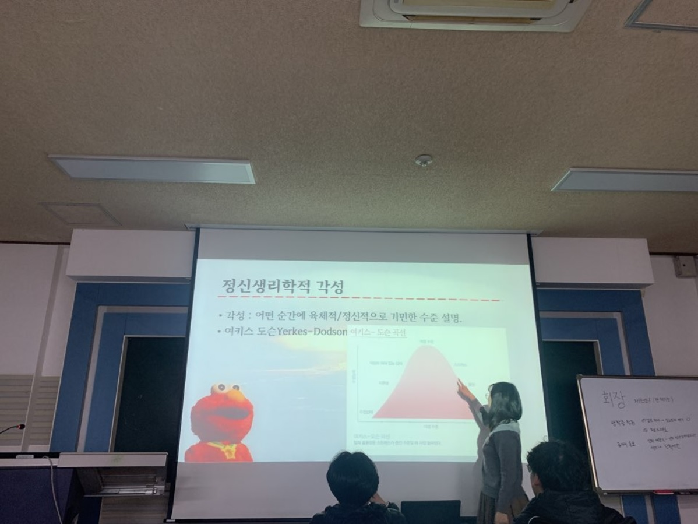

심리학과 학술동아리 스펙트럼
 부산대학교 심리학과 학술동아리 스펙트럼에서 활동하고 있습니다. 스펙트럼은 심리학의 다양한 분과를 탐색하고 자신의 흥미 영역을 확장하기위해 2016년 개설된 동아리로, 매주 자신의 관심분야에 대한 주제를 발표하고 함께 이야기를 나누는 동아리입니다.
저는 이 동아리에 2018년 1학기에 들어가, 2년간 활동 후 2020년부터 회장직을 맡게 되었습니다. 이제 처음 들어오는 새내기 부원들에게는 심리학의 분야가 얼마나 넓은지, 또 얼마나 재미있는 분야가 많은지 보여주고 싶고, 심리학에 한 발 내딛은 고학번 부원들에게는 심리학이 얼마나 깊은지를 배우고 싶습니다.
2018년 말, 새내기가 홍보 블로그를 만들고싶다고 말했던 것을 무시하지 않고 행동에 옮긴 스펙트럼 선배들의 마음을 항상 기억하며 활동하고자 합니다!
스펙트럼 블로그 바로가기
사회신경과학 연구실 아동 공정성 연구 담당 인턴
부산대학교 사회신경과학 연구실에서 2019년 여름에 아동 공정성 연구를 돕는 학부생 인턴으로 지냈습니다. 대도시와 소도시를 오가야 하는 연구라, 버스를 타고 두세시간 걸리는 소도시에 있는 초등학교와 유치원을 여러차례 다니게 되어 몸은 힘들었지만 굉장히 새로운 경험을 많이 해 기분은 즐거웠습니다.
실험실 안에서 진행하는 연구가 아니라 현장에 직접 가서 하는 연구를 가까이서 보고 도울 수 있다는 자체만으로도 큰 자산이 되었다 생각합니다. 데이터 정리, 기입같은 기본적인 실험 데이터를 다루는 법도 알게 되어 여러모로 유익한 시간이었다고 생각합니다.
SODA 데이터 장학생
이번에 신청했는데 좋은 경험이 되었으면 좋겠어유~!